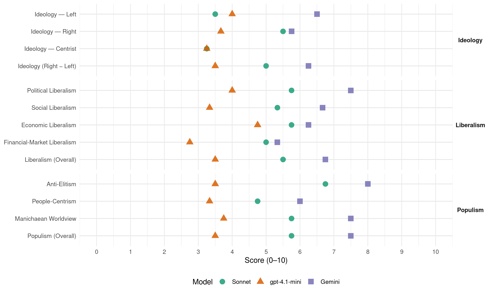

SDS (Bosnia-Herzegovina, 2014)
manifesto_id 79955_201410
Get full text: This site shows derived annotations and short verbatim quotes only. The full manifesto text is © Manifesto Project / WZB — obtain it via manifesto-project.wzb.eu using the manifesto_id above.
Headline scores
| Dimension | Sonnet | gpt-4.1-mini | Gemini |
|---|---|---|---|
| Populism (Overall) | 5.8 | 3.5 | 7.5 |
| Anti-Elitism | 6.8 | 3.5 | 8.0 |
| People-Centrism | 4.8 | 3.3 | 6.0 |
| Manichaean Worldview | 5.8 | 3.8 | 7.5 |
| Ideology (Right − Left) | 5.0 | 3.5 | 6.2 |
| Liberalism (Overall) | 5.5 | 3.5 | 6.8 |
| Political Liberalism | 5.8 | 4.0 | 7.5 |
| Social Liberalism | 5.3 | 3.3 | 6.7 |
| Economic Liberalism | 5.8 | 4.8 | 6.2 |
| Financial-Market Liberalism | 5.0 | 2.8 | 5.3 |
Evidence per dimension
Economic Liberalism
Gemini · score 7.0 · verified · chunk 1
“олакшамо пословање и поправимо пословни амбијент”
Раст доноси запошљавање, нова радна мјеста и нове пореске приходе. Стога, морамо да олакшамо пословање и поправимо пословни амбијент. Раст привреде треба потакнути
Gemini · score 6.0 · verified · chunk 2
“урушавање конкуренције и стварање монопола”
Посљедица свега тога је урушавање конкуренције и стварање монопола, дакле стварање централизације
Gemini · score 5.0 · verified · chunk 3
“створили повољнији пословни амбијент за развој привреде”
нису дали значајније резултате и створили повољнији пословни амбијент за развој привреде Републике Српске
Gemini · score 7.0 · verified · chunk 4
“извозно оријентисану тржишну привреду”
друштвено и еколошки одговорну, на знању засновану и извозно оријентисану тржишну привреду, која осигурава
gpt-4.1-mini · score 6.0 · verified · chunk 1
“пореским растерећењем рада”
…Раст привреде треба потакнути: пореским растерећењем рада, укидањем бројних парафискалних оптерећења, преусмјеравањем јавних инвестиција у радно интензивне секторе…
gpt-4.1-mini · score 3.0 · verified · chunk 2
“пореске и друге олакшице за инвестирања и отварања бизниса”
…Пореском реформом омогућити пореске и друге олакшице за инвестирања и отварања бизниса у неразвијрним опптинама РС…
gpt-4.1-mini · score 4.0 · verified · chunk 3
“Започети са озбиљном инвестиционом политиком у привреду Републике Српске”
Започети са озбиљном инвестиционом политиком у привреду Републике Српске, нарочито кроз улагања у мала и средња предузећа, битна и значајна стратешка предузећа као и улагања у пољопривреду, све у циљу јачег привредног развоја, стварања новостворене вриједности и већег запошљавања на нашим подручјима.
gpt-4.1-mini · score 6.0 · verified · chunk 4
“реформисани законски амбијент заснован на признатим стандардима”
Само реформисани законски амбијент заснован на признатим стандардима рaзвиjeних европских земаља и прилагођен степену друштвеног и еконоског развоја РС, тe потпун степен самосталности и одговорности институција система, могу обезбiједити простор за економски опоравак и развој.
Sonnet · score 7.0 · verified · chunk 1
“олакшамо пословање и поправимо пословни амбијент”
Раст доноси запошљавање, нова радна мјеста и нове пореске приходе. Стога, морамо да олакшамо пословање и поправимо пословни амбијент. Раст привреде треба потакнути
Sonnet · score 5.0 · verified · chunk 2
“стимулисати стране инвестиције у туризам”
олакшати и стимулисати стране инвестиције у туризам. АФИРМАЦИЈА И ПОБОЉШАЊЕ ЛОКАЛНОГ И РЕГИОНАЛНОГ ТУРИСТИЧКОГ ПРОИЗВОДА
Sonnet · score 5.0 · verified · chunk 3
“концепт приватизације пензионог система”
СДС планира концепт приватизације пензионог система у којем су корисници истовремено и власници капитала чиме се смањује могућност бирократске контроле и малверзација.
Sonnet · score 6.0 · verified · chunk 4
“конкурентну… тржишну привреду”
Циљ економског развоја Републике Српске је успоставити конкурентну, друштвено и еколошки одговорну… тржишну привреду
Financial-Market Liberalism
Gemini · score 6.0 · verified · chunk 1
“увести правила Базел II и CRD”
Професионализам и подизање одговорности у раду Агенције за банкарство РС је неопходно ако желимо сачувати стабилност банкарског система. Да би се спријечиле сличне појаве, потребно је у наш банкарски систем увести правила Базел II и CRD у што краћем року.
Gemini · score 5.0 · verified · chunk 3
“модел оснивања приватног пензионог осигурања којима је гарант држава”
То је модел оснивања приватног пензионог осигурања којима је гарант држава чиме се осигурава и изграђује повјерење
Gemini · score 5.0 · verified · chunk 4
“хаотичног стања на финансијском тржишту”
компензације и циљу консолидације хаотичног стања на финансијском тржишту. Обавезно увођење
gpt-4.1-mini · score 3.0 · verified · chunk 1
“Више реда и одговорности у банкарском сектору”
…Професионализам и подизање одговорности у раду Агенције за банкарство РС је неопходно ако желимо сачувати стабилност банкарског система. Да би се спријечиле сличне појаве…
gpt-4.1-mini · score 2.0 · verified · chunk 2
“продајом капитала (Телеком, рафинерије)”
…почев од редовних буџетских прихода, новца оствареног продајом капитала (Телеком, рафинерије), до високог кредитног задужења…
gpt-4.1-mini · score 2.0 · verified · chunk 3
“Фонд узима револвинг кредите код комерцијалних банака и сваки мјесец се задужује”
Фонд узима револвинг кредите код комерцијалних банака и сваки мјесец се задужује за око 40 милиона КМ, за што плаћа високе камате. Камате на краткорочна и дугорочна задужења Фонда износе око 3 милиона КМ годишње.
gpt-4.1-mini · score 4.0 · verified · chunk 4
“праћeњe и кoнтрoлa готовинских исплата и прoмoвисaњe кoриштeњa бeзгoтoвинских трaнсaкциja”
6. Прaћeњe и кoнтрoлa готовинских исплата и прoмoвисaњe кoриштeњa бeзгoтoвинских трaнсaкциja тe бoљe управљање банковним рачунима.
Sonnet · score 6.0 · verified · chunk 1
“Базел II и CRD у што краћем року”
потребно је у наш банкарски систем увести правила Базел II и CRD у што краћем року. Намјера нам је да из основа промијенимо систем рада и управљања Инвестиционо-развојном банком
Sonnet · score 4.0 · verified · chunk 2
“Закон о спречавању прања новца”
Навешћемо неколико битних закона које треба измијенити: Закон о јавним набавкама, Закон о спречавању прања новца, Закон о одузимању имовине стечене кривичним дјелом
Sonnet · score 5.0 · verified · chunk 3
“стабилизацију тржишта капитала и повећање стопе штедње”
омогући значајну акумулацију капитала, као и позитивне ефекте на привредну активност, смањење незапослености те стабилизацију тржишта капитала и повећање стопе штедње.
Sonnet · score 5.0 · verified · chunk 4
“финансијске трансакције са иностранством”
директна страна улагања, финансијске трансакције са иностранством показују негативне трендове
Political Liberalism
Gemini · score 7.0 · verified · chunk 1
“Народни посланици треба да дају примјер”
државни службеници присвајају додатне приходе, а у ствари се ради о редовним радним задацима. Народни посланици треба да дају примјер. Нема професионалног посланичког рада
Gemini · score 8.0 · verified · chunk 2
“стриктну подјелу власти на законодавну, извршну и судску”
Српска демократска странка опредијељена је за стриктну подјелу власти на законодавну, извршну и судску. Уставом Републике Српске
Gemini · score 7.0 · verified · chunk 3
“зауставити одузимање стечених права и гарантовати правну сигурност”
5. Зауставити одузимање стечених права и гарантовати правну сигурност, а инвалиднине ускладити са трошковима
Gemini · score 8.0 · verified · chunk 4
“демократског и грађанског ентитета у оквиру”
залажу за очување РС као демократског и грађанског ентитета у оквиру БиХ
gpt-4.1-mini · score 3.0 · verified · chunk 1
“Влада непосредно угрожава опстанак народа”
…Постојећа власт опасно угрожава опстанак Републике Српске. Производећи огромно сиромаштво и незапосленост, уништавајући властиту привреду… влада непосредно угрожава опстанак народа на овим просторима.
gpt-4.1-mini · score 4.0 · verified · chunk 2
“стриктну подјелу власти на законодавну, извршну и судску”
Српска демократска странка опредијељена је за стриктну подјелу власти на законодавну, извршну и судску. Уставом Републике Српске је утврђено…
gpt-4.1-mini · score 4.0 · verified · chunk 3
“Народној скупштини Републике Српске усвојити документ о десетогодишњој пензионој политици”
У Народној скупштини Републике Српске усвојити документ о десетогодишњој пензионој политици, који би обавезивао Владу РС да приликом израде Буџета РС и предлагања економске политике Републике Српске води рачуна о побољшању материјалног положаја пензионера у омјеру који је у складу са порастом БДП у Републици Српској, имајући у виду обавезе које проистичу из закона.
gpt-4.1-mini · score 5.0 · verified · chunk 4
“поштују принципи и правила међународног права заснована на Повељи Уједињених нација”
СДС ће инсистирати да се у међународним односима поштују принципи и правила међународног права заснована на Повељи Уједињених нација и другим актима, као и општеприхваћена правила понашања у односима држава.
Sonnet · score 5.0 · verified · chunk 1
“транспарентнији и посљедица конкретних техно-економских”
Потребно је побољшати процес јавних набавки, тако да буде транспарентнији и посљедица конкретних техно-економских анализа сваке инвестиције
Sonnet · score 7.0 · verified · chunk 2
“стриктну подјелу власти на законодавну, извршну и судску”
Српска демократска странка опредијељена је за стриктну подјелу власти на законодавну, извршну и судску. Уставом Републике Српске је утврђено
Sonnet · score 5.0 · verified · chunk 3
“деполитизација и департизација”
Да би овај принцип заживио, потребна је деполитизација и департизација, те прецизно законско дефинисање процедура права и обавеза здравствених радника
Sonnet · score 6.0 · verified · chunk 4
“транспарентности”
доношење конкретних законских гаранција… отворености и транспарентности; укинути механизме протектората, а нарочито тзв. бонска овлашћења ОХР
Liberalism (Overall)
Gemini · score 7.0 · verified · chunk 1
“олакшамо пословање и поправимо пословни амбијент”
Раст доноси запошљавање, нова радна мјеста и нове пореске приходе. Стога, морамо да олакшамо пословање и поправимо пословни амбијент. Раст привреде треба потакнути
Gemini · score 7.0 · verified · chunk 2
“стриктну подјелу власти на законодавну, извршну и судску”
Српска демократска странка опредијељена је за стриктну подјелу власти на законодавну, извршну и судску. Уставом Републике Српске
Gemini · score 6.0 · verified · chunk 3
“зауставити одузимање стечених права и гарантовати правну сигурност”
5. Зауставити одузимање стечених права и гарантовати правну сигурност, а инвалиднине ускладити са трошковима
Gemini · score 7.0 · verified · chunk 4
“извозно оријентисану тржишну привреду”
друштвено и еколошки одговорну, на знању засновану и извозно оријентисану тржишну привреду, која осигурава
gpt-4.1-mini · score 3.0 · verified · chunk 1
“Више реда и одговорности у банкарском сектору”
…Професионализам и подизање одговорности у раду Агенције за банкарство РС је неопходно ако желимо сачувати стабилност банкарског система. Да би се спријечиле сличне појаве…
gpt-4.1-mini · score 3.0 · verified · chunk 2
“стриктну подјелу власти на законодавну, извршну и судску”
Српска демократска странка опредијељена је за стриктну подјелу власти на законодавну, извршну и судску. Уставом Републике Српске је утврђено…
gpt-4.1-mini · score 3.0 · verified · chunk 3
“У Народној скупштини Републике Српске усвојити документ о десетогодишњој пензионој политици”
У Народној скупштини Републике Српске усвојити документ о десетогодишњој пензионој политици, који би обавезивао Владу РС да приликом израде Буџета РС и предлагања економске политике Републике Српске води рачуна о побољшању материјалног положаја пензионера у омјеру који је у складу са порастом БДП у Републици Српској, имајући у виду обавезе које проистичу из закона.
gpt-4.1-mini · score 5.0 · verified · chunk 4
“реформисани законски амбијент заснован на признатим стандардима”
Само реформисани законски амбијент заснован на признатим стандардима рaзвиjeних европских земаља и прилагођен степену друштвеног и еконоског развоја РС, тe потпун степен самосталности и одговорности институција система, могу обезбiједити простор за економски опоравак и развој.
Sonnet · score 6.0 · verified · chunk 1
“пореским растерећењем рада, укидањем бројних парафискалних”
Раст привреде треба потакнути: пореским растерећењем рада, укидањем бројних парафискалних оптерећења, преусмјеравањем јавних инвестиција у радно интензивне секторе
Sonnet · score 6.0 · verified · chunk 2
“судови и судије морају бити слободни у раду”
Српска демократска странка чврсто се залаже да судови и судије морају бити слободни у раду, имуни на притиске и уцјене других органа власти
Sonnet · score 5.0 · verified · chunk 3
“реформисани систем пензијског и инвалидског осигурања учинити потпуно транспарентним”
Реформисани систем пензијског и инвалидског осигурања учинити потпуно транспарентним и обавезати Фонд ПИО РС да сваког мјесеца објављује сљедеће податке
Sonnet · score 5.0 · verified · chunk 4
“конкурентну… тржишну привреду”
Циљ економског развоја Републике Српске је успоставити конкурентну, друштвено и еколошки одговорну… тржишну привреду
Anti-Elitism
Gemini · score 8.0 · verified · chunk 1
“присутним криминалом и корупцијом у свим сегментима власти”
економску и финансијску ситуацију. У такво стање смо доведени: нерационалним и расипничким трошењем јавних средстава, лутањем у пројектовању и спровођењу мјера економске политике, присутним криминалом и корупцијом у свим сегментима власти, непотизмом и буразерском економијом
Gemini · score 8.0 · verified · chunk 2
“омогућава владајући режим”
приватном интересу какво је тренутно стање које омогућава владајући режим. Управо такво стање је присутно
Gemini · score 8.0 · verified · chunk 3
“неодговорности власти и здравственог менаџмента”
упркос лошем управљању и неодговорности власти и здравственог менаџмента, улажу максималне напоре
Gemini · score 8.0 · verified · chunk 4
“утицајним представницима режима, фамилијарним везама”
према критеријима блискости са утицајним представницима режима, фамилијарним везама, награђивањем за разне услуге
gpt-4.1-mini · score 3.0 · verified · chunk 1
“присутним криминалом и корупцијом у свим сегментима власти”
…лошег управљања земљом од стране Владе коју чине представници СНСД-а, СП РС-а и ДНС-а, у посљедњих десетак година довели су Републике Српске у тешку… присутним криминалом и корупцијом у свим сегментима власти, непотизмом и буразерском економијом, стварањем скупе и неефикасне државне управе…
gpt-4.1-mini · score 2.0 · verified · chunk 2
“владајући режим”
…омогућава владајући режим. Управо такво стање је присутно и у области просторног уређења…
gpt-4.1-mini · score 3.0 · verified · chunk 3
“Власт СНСД-а доноси измјене овог Закона током 2007. и 2008.”
Власт СНСД-а доноси измјене овог Закона током 2007. и 2008. када се за потребе избора и у жељи придобијања борачке популације измјенама Закона проширује обим права и повећавају инвалиднине, уз повећање буџетског оквира за 37 милиона КМ.
gpt-4.1-mini · score 6.0 · verified · chunk 4
“ПРЕПОРУКЕ Имајући у виду тренутну ситуацију”
ПРЕПОРУКЕ Имајући у виду тренутну ситуацију, која је презентована у претходно наведеним засебним анализама, Српска демократска странка је мишљења да би приликом санирања видно начињене штете једног од најважнијих ресора у Српској, требало поћи од сљедећих фактора:
Sonnet · score 7.0 · verified · chunk 1
“криминалом и корупцијом у свим сегментима власти”
нерационалним и расипничким трошењем јавних средстава, лутањем у пројектовању и спровођењу мјера економске политике, присутним криминалом и корупцијом у свим сегментима власти, непотизмом и буразерском економијом
Sonnet · score 7.0 · verified · chunk 2
“криминал и корупција, из простог разлога што су врх власти”
нема активне борбе за заустављање криминала и корупције, из простог разлога што су врх власти и поједници који управљају најважнијим институцијама и сам укључен у криминалне активности
Sonnet · score 7.0 · verified · chunk 3
“нерационалном и криминалном понашању претходних власти”
Узрок оваквог хаоса је у нерационалном и криминалном понашању претходних власти, нарочито министара здравља и директора Фонда здравства.
Sonnet · score 6.0 · verified · chunk 4
“олигархијског концепта државне/ентитетске управе”
због пада квалитета образовања и олигархијског концепта државне/ентитетске управе, предузетни напуштају РС и БиХ
Ideology — Centrist
gpt-4.1-mini · score 2.0 · verified · chunk 1
“нова власт”
…Излаз из таквог стања је могућ само на основу нове економске политике коју ће креирати нова власт. Уколико се на сљедећим изборима не ријешимо постојеће крајње штетне и опасне власти…
gpt-4.1-mini · score 2.0 · verified · chunk 2
“другачији концепт дјеловања”
…Промјенe су нужне, а могуће су са другим политичарима и са другачијим концептом дјеловања…
gpt-4.1-mini · score 4.0 · verified · chunk 3
“партнерског уважавања организација и представника борачких категорија”
заједничка одговорност за РС, у смислу успостављања одговорног дијалога у интересу РС на принципима партнерског уважавања организација и представника борачких категорија на рјешавању статуса и обима њихових права.
gpt-4.1-mini · score 5.0 · verified · chunk 4
“консензус српских странака уз превазилажење идеолошких и програмских разлика”
СДС се од свог оснивања залаже, да се у одбрани и афирмацији легитимних интереса српског народа и РС на међународном плану оствари консензус српских странака уз превазилажење идеолошких и програмских разлика.
Sonnet · score 4.0 · verified · chunk 1
“нова власт”
Излаз из таквог стања је могућ само на основу нове економске политике коју ће креирати нова власт. Уколико се на сљедећим изборима не ријешимо постојеће крајње штетне
Sonnet · score 3.0 · verified · chunk 2
“другим политичарима и са другачијим концептом дјеловања”
Промјенe су нужне, а могуће су са другим политичарима и са другачијим концептом дјеловања
Sonnet · score 3.0 · verified · chunk 3
“социјално одговорном политиком”
Популистичку политику лажног удварања и обећања треба замијенити социјално одговорном политиком
Sonnet · score 3.0 · verified · chunk 4
“функционалне и ефикасне законске регулативе”
СДС се не залаже за нерационално смањивање пореза, него за успостављање функционалне и ефикасне законске регулативе
Ideology — Left
Gemini · score 6.0 · verified · chunk 2
“принципа праведности у расподјели”
сваког појединца, али и спровођењем принципа праведности у расподјели свих друштвених вриједности.
Gemini · score 7.0 · verified · chunk 3
“праведном прерасподјелом средстава - обезбиједити примјерена средстава за социјално најугроженије”
није толико сиромашно да не може на квалитетан начин - праведном прерасподјелом средстава - обезбиједити примјерена средстава за социјално најугроженије категорије становништва.
gpt-4.1-mini · score 3.0 · verified · chunk 1
“нерационалним и расипничким трошењем јавних средстава”
…Постојећа власт опасно угрожава опстанак Републике Српске. Производећи огромно сиромаштво и незапосленост, уништавајући властиту привреду, трошећи крајње неразумно огромне износе средстава…
gpt-4.1-mini · score 3.0 · verified · chunk 2
“социјална неједнакост и неправда никада нису биле израженије”
…социјална неједнакост и неправда никада нису биле израженије у Српској, што је директни утицај огромне корупције у нашем друштву…
gpt-4.1-mini · score 5.0 · verified · chunk 3
“социјално одговорном развојну политику”
Српска демократска странка је опредијељена да гради праведно и морално друштво, уз социјално одговорну развојну политику. Свјесни смо да на кризу постојећи модел државе нема одговор.
gpt-4.1-mini · score 5.0 · verified · chunk 4
“смањивaњe пoрeзa, нeгo зa успoстaвљaње функциoнaлнe и eфикaснe зaкoнскe рeгулaтивe”
Српскe Дeмoкрaтскe Стрaнкe сe нe зaлaжe зa нeрaциoнaлнo смaњивaњe пoрeзa, нeгo зa успoстaвљaње функциoнaлнe и eфикaснe зaкoнскe рeгулaтивe.
Sonnet · score 3.0 · verified · chunk 1
“Ниже стопе ПДВ-а ће смањити трошкове живота”
Ниже стопе ПДВ-а ће смањити трошкове живота у БиХ, помоћи сиромашним домаћинствима и подстаћи потрошњу која је у неколико последњих година у паду
Sonnet · score 4.0 · verified · chunk 2
“Социјална неједнакост и неправда никада нису биле израженије”
Социјална неједнакост и неправда никада нису биле израженије у Српској, што је директни утицај огромне корупције у нашем друштву
Sonnet · score 4.0 · verified · chunk 3
“праведном прерасподјелом средстава”
ниједно друштво није толико сиромашно да не може на квалитетан начин - праведном прерасподјелом средстава - обезбиједити примјерена средстава за социјално најугроженије
Sonnet · score 3.0 · verified · chunk 4
“социјалне кохезије, солидарности, равноправности”
боље и праведније друштво у погледу социјалне кохезије, солидарности, равноправности и напретка за све грађане РС
Ideology (Right − Left)
Gemini · score 6.0 · verified · chunk 1
“власништво у енергетици дугорочан национални интерес”
Полазећи од јасне политике СДС-а да је власништво у енергетици дугорочан национални интерес, питање приватизације и распродаје овог ресурса неће се дозволити.
Gemini · score 6.0 · verified · chunk 2
“принципа праведности у расподјели”
сваког појединца, али и спровођењем принципа праведности у расподјели свих друштвених вриједности.
Gemini · score 6.0 · verified · chunk 3
“носиоци терета кризе буду богатији и власт у цјелини”
односно да носиоци терета кризе буду богатији и власт у цјелини; поштовање достојанства
Gemini · score 7.0 · verified · chunk 4
“заштиту културних и мањинских права Срба”
заједнички органи БиХ предузимају активности у циљу заштите културних и мањинских права Срба у региону
gpt-4.1-mini · score 2.0 · verified · chunk 1
“нова власт”
…Излаз из таквог стања је могућ само на основу нове економске политике коју ће креирати нова власт. Уколико се на сљедећим изборима не ријешимо постојеће крајње штетне и опасне власти…
gpt-4.1-mini · score 2.0 · verified · chunk 2
“владајући режим”
…омогућава владајући режим. Управо такво стање је присутно и у области просторног уређења…
gpt-4.1-mini · score 4.0 · verified · chunk 3
“социјално одговорну развојну политику”
Српска демократска странка је опредијељена да гради праведно и морално друштво, уз социјално одговорну развојну политику. Свјесни смо да на кризу постојећи модел државе нема одговор.
gpt-4.1-mini · score 6.0 · verified · chunk 4
“ПРЕПОРУКЕ Имајући у виду тренутну ситуацију”
ПРЕПОРУКЕ Имајући у виду тренутну ситуацију, која је презентована у претходно наведеним засебним анализама, Српска демократска странка је мишљења да би приликом санирања видно начињене штете једног од најважнијих ресора у Српској, требало поћи од сљедећих фактора:
Sonnet · score 5.0 · verified · chunk 1
“непотизмом и буразерском економијом”
присутним криминалом и корупцијом у свим сегментима власти, непотизмом и буразерском економијом, стварањем скупе и неефикасне државне управе
Sonnet · score 5.0 · verified · chunk 2
“неолиберални политички концепт који почива на заштити привилегованих”
у области просторног уређења, грађевинарства и екологије гдје се примјењује неолиберални политички концепт који почива на заштити привилегованих друштвених слојева
Sonnet · score 5.0 · verified · chunk 3
“национално културно насљеђе, заштиту и промоцију”
Остварити сталну бригу за национално културно насљеђе, заштиту и промоцију споменика културе, ћирилице, националне историје
Sonnet · score 5.0 · verified · chunk 4
“заштиту интереса РС и српског народа”
пружању гаранција за реализацију легитимних интереса РС и српског народа који су гарантовани ДС
Ideology — Right
Gemini · score 6.0 · verified · chunk 1
“власништво у енергетици дугорочан национални интерес”
Полазећи од јасне политике СДС-а да је власништво у енергетици дугорочан национални интерес, питање приватизације и распродаје овог ресурса неће се дозволити.
Gemini · score 5.0 · verified · chunk 2
“НАЈВЕЋИ НЕПРИЈАТЕЉ СРПСКОГ НАРОДА”
КРИМИНАЛ И КОРУПЦИЈА – НАЈВЕЋИ НЕПРИЈАТЕЉ СРПСКОГ НАРОДА У РЕПУБЛИЦИ СРПСКОЈ Морално пропадање
Gemini · score 5.0 · verified · chunk 3
“заштиту и промоцију споменика културе, ћирилице, националне историје”
остварити сталну бригу за национално културно насљеђе, заштиту и промоцију споменика културе, ћирилице, националне историје као најважинијег сегмента
Gemini · score 7.0 · verified · chunk 4
“заштиту културних и мањинских права Срба”
заједнички органи БиХ предузимају активности у циљу заштите културних и мањинских права Срба у региону
gpt-4.1-mini · score 2.0 · verified · chunk 1
“опстанак народа на овим просторима”
…влада непосредно угрожава опстанак народа на овим просторима. Продаја, задуживање и крајње неразумно трошење јавних средстава су основне економске активности ове владе…
gpt-4.1-mini · score 2.0 · verified · chunk 3
“Истицати допринос бораца у отаџбинском рату”
Истицати допринос бораца у отаџбинском рату и инсистирати да влада материјално и кадровски ојача Центар за истраживање ратних злочина.
gpt-4.1-mini · score 7.0 · verified · chunk 4
“српског народа у Босни и Херцеговини на своју сувереност”
Оспоравање ДС, а нарочито његовог Анекса IV (Устав БиХ) се сада врши путем софистицираних стратегија којима се поново отвара питање стечених историјских права српског народа у Босни и Херцеговини на своју сувереност.
Sonnet · score 5.0 · verified · chunk 1
“заштита домаће производње”
одредити приоритетне секторе и развојне правце, анализирати постојеће производне капацитете, направити индустријске политике за дужи период, одговорније управљање постојећим предузећима, заштита домаће производње
Sonnet · score 5.0 · verified · chunk 2
“Паралелним специјалним везама између Републике Србије и Републике Српске”
Споразум о паралелним специјалним везама између Републике Србије и Републике Српске треба смјестити у законодавно-правни систем Републике
Sonnet · score 6.0 · verified · chunk 3
“допринос бораца у отаџбинском рату”
Истицати допринос бораца у отаџбинском рату и инсистирати да влада материјално и кадровски ојача Центар за истраживање ратних злочина.
Sonnet · score 6.0 · verified · chunk 4
“заштиту интереса РС и српског народа”
пружању гаранција за реализацију легитимних интереса РС и српског народа који су гарантовани ДС
Manichaean Worldview
Gemini · score 8.0 · verified · chunk 1
“наше економско пропадање и нестајање ће се убрзати”
Уколико се на сљедећим изборима не ријешимо постојеће крајње штетне и опасне власти, а будућим владама не наметнемо обавезу испуњавања критерија економске рационалности, наше економско пропадање и нестајање ће се убрзати.
Gemini · score 8.0 · verified · chunk 2
“КРИМИНАЛ И КОРУПЦИЈА – НАЈВЕЋИ НЕПРИЈАТЕЉ СРПСКОГ НАРОДА”
КРИМИНАЛ И КОРУПЦИЈА – НАЈВЕЋИ НЕПРИЈАТЕЉ СРПСКОГ НАРОДА У РЕПУБЛИЦИ СРПСКОЈ Морално пропадање
Gemini · score 7.0 · verified · chunk 3
“систем без одговорности и контроле који је проткан расипништвом и криминалним пословањем”
тренутно имамо систем без одговорности и контроле који је проткан расипништвом и криминалним пословањем, а одржава се само због ентузијазма
Gemini · score 7.0 · verified · chunk 4
“тоталне деструкције у свим аспектима”
осам година се суштински ништа није направило осим тоталне деструкције у свим аспектима привреде. Резултати су
gpt-4.1-mini · score 3.0 · verified · chunk 1
“Влада непосредно угрожава опстанак народа”
…Продаја, задуживање и крајње неразумно трошење јавних средстава су основне економске активности ове владе. Наша привреда и наше финансије су у живом блату… влада непосредно угрожава опстанак народа на овим просторима.
gpt-4.1-mini · score 2.0 · verified · chunk 2
“корумпираног друштва”
…социјалне неправде и толике социјалне обесправљености, резултати су укоријењене корупције. По томе смо високо рангирани…
gpt-4.1-mini · score 3.0 · verified · chunk 3
“Ауторитарно и нестручно управљање, лишено знања и одговорности”
Ауторитарно и нестручно управљање, лишено знања и одговорности као тренд укупне политике у Републици Српској, у здрваству је довело до кулминације негативних резултата и угрозило национално здравље наших грађана и народа.
gpt-4.1-mini · score 7.0 · verified · chunk 4
“сатанизације српског народа”
Посебан значај СДС ће посветити спречавању новог и софистицираног таласа сатанизације српског народа, као и наметању реформи које теже укидању или ревизији ДС.
Sonnet · score 6.0 · verified · chunk 1
“тајкуна владајуће странке”
Реална је сумња да је тај новац отишао у приватне џепове тајкуна владајуће странке. У неколико наврата у јавности су се појављивале информације
Sonnet · score 6.0 · verified · chunk 2
“КРИМИНАЛ И КОРУПЦИЈА – НАЈВЕЋИ НЕПРИЈАТЕЉ СРПСКОГ НАРОДА”
КРИМИНАЛ И КОРУПЦИЈА – НАЈВЕЋИ НЕПРИЈАТЕЉ СРПСКОГ НАРОДА У РЕПУБЛИЦИ СРПСКОЈ. Морално пропадање норми једног друштва најопасније се манифестује кроз настанак криминала и корупције
Sonnet · score 6.0 · verified · chunk 3
“Популистичку политику лажног удварања и обећања”
Мјере: 1. Популистичку политику лажног удварања и обећања треба замијенити социјално одговорном политиком
Sonnet · score 5.0 · verified · chunk 4
“тоталне деструкције у свим аспектима привреде”
У посљедњих осам година се суштински ништа није направило осим тоталне деструкције у свим аспектима привреде
People-Centrism
Gemini · score 7.0 · verified · chunk 1
“влада непосредно угрожава опстанак народа”
Производећи огромно сиромаштво и незапосленост, уништавајући властиту привреду, трошећи крајње неразумно огромне износе средстава, прекомјерно се задужујући и распродајући природна богатства, влада непосредно угрожава опстанак народа на овим просторима.
Gemini · score 7.0 · verified · chunk 2
“вратити Републици Српској и њеном народу”
стечених на незаконит начин и поврат народу, јер су од њега и одузете.
Gemini · score 5.0 · verified · chunk 3
“угрозило национално здравље наших грађана”
кулминације негативних резултата и угрозило национално здравље наших грађана и народа.
Gemini · score 5.0 · verified · chunk 4
“напредак за све грађане РС”
солидарности, равноправности и напредак за све грађане РС, те успоставити друштво
gpt-4.1-mini · score 2.0 · verified · chunk 1
“влада непосредно угрожава опстанак народа на овим просторима”
…Продаја, задуживање и крајње неразумно трошење јавних средстава су основне економске активности ове владе. Наша привреда и наше финансије су у живом блату… влада непосредно угрожава опстанак народа на овим просторима.
gpt-4.1-mini · score 4.0 · verified · chunk 3
“Сваки трећи становник РС је у стању социјалне потребе.”
Сваки трећи становник РС је у стању социјалне потребе. У том смислу СДС предлаже да висина новчане помоћи зависи од броја чланова породице и кретала би се за појединца најмање 20% просјечне плате исплаћене у Републици Српској у претходном кварталу, до најмање 35% за породице са 5 или више чланова.
gpt-4.1-mini · score 4.0 · verified · chunk 4
“грађани РС жели бити дио ЕУ”
Већина грађана РС жели бити дио ЕУ, за што се залажу практично све српске парламентарне странке, јер ће се тако на најбољи начин обезбиједити модернизовање економског и социјалног система РС и омогућити приступ наших производа на тржиште ЕУ, што је претпоставка њеног јачања.
Sonnet · score 5.0 · verified · chunk 1
“народ у РС више не може да чека”
одлаже ефекте, а народ у РС више не може да чека на бироима за запошљавање, узалудно се надајући да ће добити било какав посао
Sonnet · score 5.0 · verified · chunk 2
“вратити Републици Српској и њеном народу”
Сву имовину стечену криминалом и корупцијом одузети трајно и вратити Републици Српској и њеном народу од кога је опљачкана
Sonnet · score 5.0 · verified · chunk 3
“Сваки трећи становник РС је у стању социјалне потребе”
Сваки трећи становник РС је у стању социјалне потребе. У том смислу СДС предлаже да висина новчане помоћи зависи од броја чланова породице
Sonnet · score 4.0 · verified · chunk 4
“боље и праведније друштво”
нова и реално плаћена радна мјеста, те боље и праведније друштво у погледу социјалне кохезије, солидарности, равноправности и напретка за све грађане РС
Populism (Overall)
Gemini · score 8.0 · verified · chunk 1
“постојеће крајње штетне и опасне власти”
Уколико се на сљедећим изборима не ријешимо постојеће крајње штетне и опасне власти, а будућим владама не наметнемо обавезу испуњавања критерија економске рационалности
Gemini · score 8.0 · verified · chunk 2
“омогућава владајући режим”
приватном интересу какво је тренутно стање које омогућава владајући режим. Управо такво стање је присутно
Gemini · score 7.0 · verified · chunk 3
“Популистичку политику лажног удварања и обећања треба замијенити социјално одговорном политиком”
Мјере: 1. Популистичку политику лажног удварања и обећања треба замијенити социјално одговорном политиком 2. Стимулисати запошљавање
Gemini · score 7.0 · verified · chunk 4
“утицајним представницима режима, фамилијарним везама”
према критеријима блискости са утицајним представницима режима, фамилијарним везама, награђивањем за разне услуге
gpt-4.1-mini · score 3.0 · verified · chunk 1
“присутним криминалом и корупцијом у свим сегментима власти”
…лошег управљања земљом од стране Владе коју чине представници СНСД-а, СП РС-а и ДНС-а, у посљедњих десетак година довели су Републике Српске у тешку… присутним криминалом и корупцијом у свим сегментима власти, непотизмом и буразерском економијом, стварањем скупе и неефикасне државне управе…
gpt-4.1-mini · score 2.0 · verified · chunk 2
“владајући режим”
…омогућава владајући режим. Управо такво стање је присутно и у области просторног уређења…
gpt-4.1-mini · score 3.0 · verified · chunk 3
“Власт СНСД-а доноси измјене овог Закона током 2007. и 2008.”
Власт СНСД-а доноси измјене овог Закона током 2007. и 2008. када се за потребе избора и у жељи придобијања борачке популације измјенама Закона проширује обим права и повећавају инвалиднине, уз повећање буџетског оквира за 37 милиона КМ.
gpt-4.1-mini · score 6.0 · verified · chunk 4
“ПРЕПОРУКЕ Имајући у виду тренутну ситуацију”
ПРЕПОРУКЕ Имајући у виду тренутну ситуацију, која је презентована у претходно наведеним засебним анализама, Српска демократска странка је мишљења да би приликом санирања видно начињене штете једног од најважнијих ресора у Српској, требало поћи од сљедећих фактора:
Sonnet · score 6.0 · verified · chunk 1
“Постојећа власт опасно угрожава опстанак”
Постојећа власт опасно угрожава опстанак Републике Српске. Производећи огромно сиромаштво и незапосленост, уништавајући властиту привреду
Sonnet · score 6.0 · verified · chunk 2
“врх власти и поједници који управљају”
нема активне борбе за заустављање криминала и корупције, из простог разлога што су врх власти и поједници који управљају најважнијим институцијама и сам укључен у криминалне активности
Sonnet · score 6.0 · verified · chunk 3
“криминалним пословањем претходних власти”
систем без одговорности и контроле који је проткан расипништвом и криминалним пословањем, а одржава се само због ентузијазма часних здравствених радника
Sonnet · score 5.0 · verified · chunk 4
“олигархијског концепта државне/ентитетске управе”
због пада квалитета образовања и олигархијског концепта државне/ентитетске управе, предузетни напуштају РС и БиХ
Social Liberalism